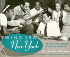

An intimate look at the teeming world of New York Swing in the '20s and '30s
An intimate look at the teeming world of New York Swing in the '20s and '30s


 An intimate look at the teeming world of New York Swing in the '20s and '30s
An intimate look at the teeming world of New York Swing in the '20s and '30s

|  |
Swing Era New YorkThe Jazz Photographs of Charles PetersonPhotos prepared by Don Peterson from his father's original negativesW. Royal Stokes, photographs by Don Peterson, foreword by Stanley Dancepaper EAN: 978-1-56639-464-2 (ISBN: 1-56639-464-3) |
"W. Royal Stokes['s]...text is much more than captions; it's a richly detailed commentary that embraces notation, anecdote and overview...Jazz has had a number of distinctive photographers...Peterson clearly belongs in their company."
—Washington Post
Charles Peterson entered the jazz world of New York as a guitarist but made his true contribution documenting an era and its most notable performers. Peterson took up the camera in the mid 1930s and transformed himself from a performer on stage to a visual recorder and observer of the stage. Creating a photographic style that combines artistic sensibility and technical skill, he became a preeminent New York jazz photographer of the pre-bebop, small combos and Big Band era.
A deep love of jazz led Peterson to the legendary clubs of Harlem, 52nd Street, and Greenwich Village, concert halls and ballrooms, jam sessions, recording studios, backstage get-togethers, and private parties. As a jazz scene insider, Peterson had access to all of these formal and informal venues. Among the countless subjects he enshrined on film are Louis Armstrong, Billie Holiday, Duke Ellington, Benny Goodman, Zutty Singleton, Fats Waller, Mildred Bailey, Cab Calloway, Pee Wee Russell, Lester Young, and Jack Teagarden.
Peterson's photographs expose a startling contrast between integrated bandstands and audiences and the segregated world, as well as reveal the determination of those who refused to be confined by such oppressive conventions. They depict musicianship and camaraderie, dancing, and technical innovation, as well as the harsh contrast of an all too pervasive alcoholism that interrupted the lives of many in that New York scene.
W. Royal Stokes provides commentary, historical and biographical information, and lively anecdotes that connect the musicians featured in Peterson's photographs to each other and to the music within the social world of jazz. Don Peterson restored the 229 photographs included here from his father's original negatives. More than half have never been published, while many others have not been seen in print since the 1940s. This striking collection represents a historical document of a city and an era that brought the great jazz and swing musicians of the time to the height of success and solidified their reputations.
"A compact yet sumptuous volume, it's one of the finest collections of its kind—unexpectedly so, because while a handful of these pictures are classics, most have not been seen in half a century."
—Village Voice
"Once again, Royal Stokes does it."
—Bill Cosby
"No one is more qualified than W. Royal Stokes to write an overview of the swing era in New York. It is the definitive work on the subject, informative, exciting, and vastly entertaining."
—Mel Torm�
"A great book—Charles Peterson's memorable photos and Royal Stokes' comments and quotes help bring back the feeling of excitement and discovery I experienced when I first heard the great jazz masters of the 1920s and 1930s."
—Billy Taylor
I saw it, lived it, Charles Peterson captured it. His visual imagery of the swing era in New York is authentic, intimate, and filled with emotion."
—Milt "Judge" Hinton
Foreword – Stanley Dance
Acknowledgments
Introduction
1. Harlem
2. 52nd Street
3. Nick's, the Village Vanguard, Caf� Society, and Other Venues
4. Jam Sessions
5. The Recording Scene
6. The Big Bands
Notes
Index of Names
 | W. Royal Stokes, editor of Jazz Notes, has severed as Jazz Critic for The Washington Post and as editor of Jazz Times. He is also the author of The Jazz Scene: An Informal History From New Orleans to 1990. |
 | Don Peterson, son of Charles Peterson, is a freelance motion picture and television script writer. |
African American Studies
Music and Dance
Art and Photography
© 2015 Temple University. All Rights Reserved. This page: http://www.temple.edu/tempress/titles/1054_reg.html.